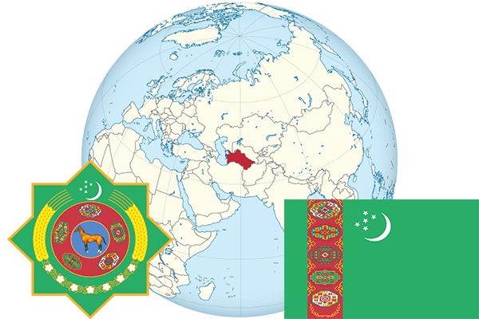

To`liq nomi: Turkmaniston Respublikasi
Region: Oʻrta Osiyo
Qonunchilik shakli: Respublika
Mustaqillik kuni: 27 oktabr 1991-yil
Poytaxt: Ashxobod
Maydoni: 488,100 km²
Chegaradosh davlatlari: Afg’oniston, Eron, Qozog’iston, O’zbekiston.
Aholisi: 5 490 563 (2017-yil)
Aholi zichligi: 10 /км²
Aholining o`rtacha yoshi: 65,6 yil
Rasmiy tili: Turkman tili
Dini: Islom
Pul birligi: Manat
Telefon prefiksi: +993
Internet domen: .tm
Xalqaro tashkilotlarga a`zoligi: BMT
Dengiz va okeanlarga chiqishi: Kaspiy dengiz
YIM: Butun: $ 47,9mlrd. (2015-yil) Jon boshiga: $ 8724
Yirik shaharlari: Ashxobod, Turkmanobod, Dashoguz, Bolqonobod